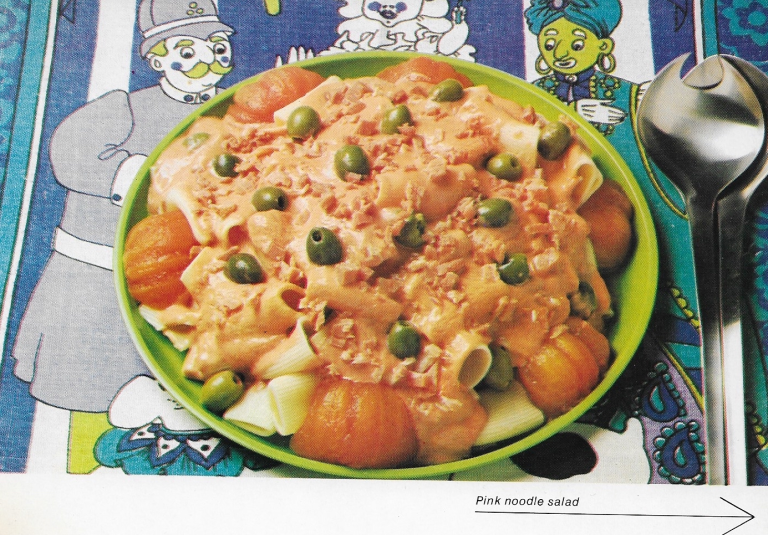

"Perfection" Salad

Description:
Please do not try this recipe at home. It is a really
bad idea.
Ingredients:
- 8 oz rigatoni noodles
- 3.5 oz boiled ham
- 4 tomatoes, pureed
- 1 teaspoon French mustard
- 1 lemon
- salt and pepper
- 1/2 cup safflower oil
- 1 Tablespoon heavy cream
- 3.5 oz olives
Instructions:
- Cook the rigatoni for 20 minutes in boiling salted water. Drain and cool.
- Dice the ham and set aside. Scald the tomatoes to remove the skin, seed them, and purée them.
- Mix the French mustard together with the lemon, salt and pepper; gradually add the oil, stirring continuously. Blend in the tomato purée and heavy cream.
- Mix the pink dressing with the noodles. Place in a serving dish, sprinkle with the ham, and garnish with the olives.